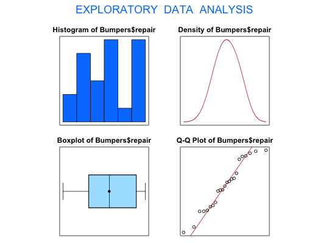
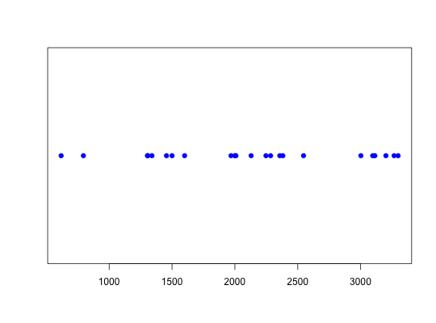
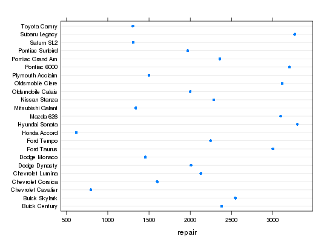

Data for Exercise 1.73
Bumpers
A data frame with 23 observations on the following two variables.
Buick Century,
Buick Skylark, Chevrolet Cavalier, Chevrolet Corsica,
Chevrolet Lumina, Dodge Dynasty, Dodge Monaco, Ford
Taurus, Ford Tempo, Honda Accord, Hyundai Sonata,
Mazda 626, Mitsubishi Galant, Nissan Stanza,
Oldsmobile Calais, Oldsmobile Ciere, Plymouth Acclaim,
Pontiac 6000, Pontiac Grand Am, Pontiac Sunbird,
Saturn SL2, Subaru Legacy, and Toyota CamryKitchens, L. J. (2003) Basic Statistics and Data Analysis. Duxbury
#> [1] "Bumpers$repair" #>#> Size (n) Missing Minimum 1st Qu Mean Median TrMean #> 23.000 0.000 618.000 1456.000 2122.478 2129.000 2138.143 #> 3rd Qu Max. Stdev. Var. SE Mean I.Q.R. Range #> 3002.000 3298.000 798.457 637534.170 166.490 1546.000 2680.000 #> Kurtosis Skewness SW p-val #> -1.140 -0.080 0.287 #>stripchart(Bumpers$repair, method = "stack", pch = 19, col = "blue")library(lattice) dotplot(car ~ repair, data = Bumpers)